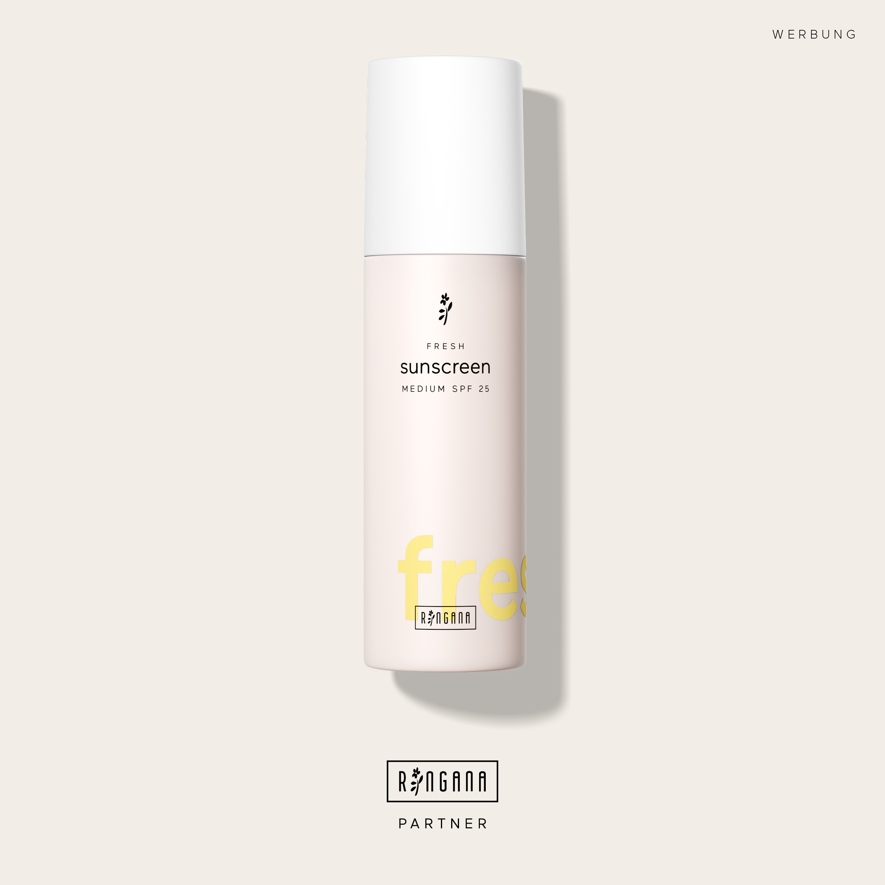
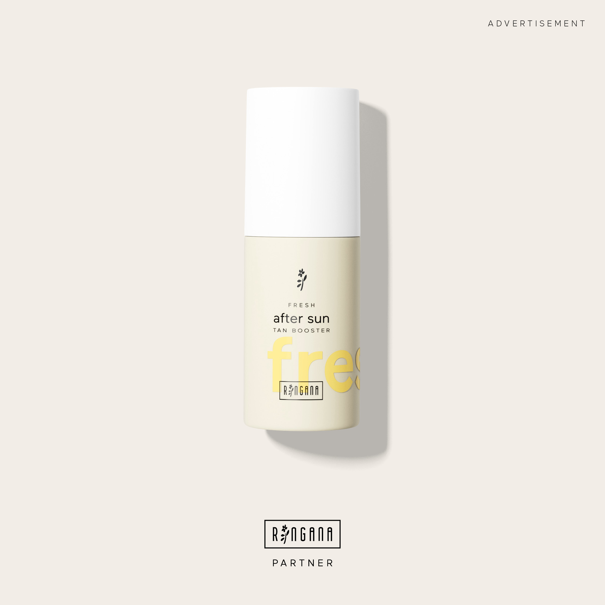
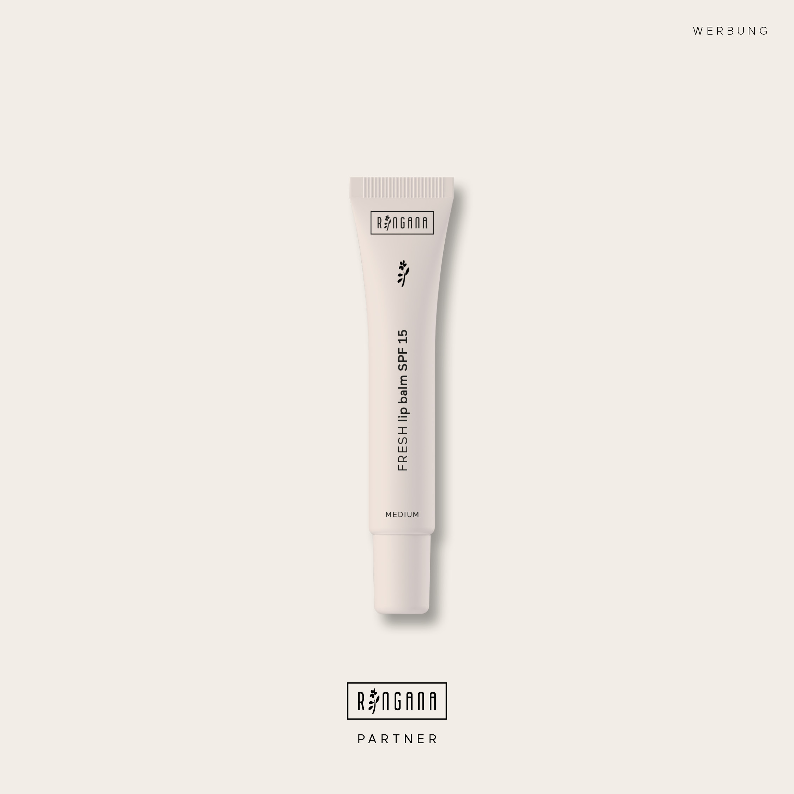

Sonnenschutz gehört dazu, das weiß eigentlich jede:r. Was seltener diskutiert wird: was drin ist. Nicht jede Sonnencreme funktioniert gleich, und dieser Unterschied ist größer, als er auf den ersten Blick aussieht.
Es geht nicht nur um die Haut. Es geht auch darum, was beim Schwimmen ins Wasser gerät, und was der Körper täglich aufnimmt.
Was SPF eigentlich bedeutet, und warum die Zahl weniger aussagt als gedacht
SPF steht für Sun Protection Factor und misst ausschließlich den Schutz vor UVB-Strahlung. UVA-Strahlung, die tiefer in die Haut eindringt und für vorzeitige Hautalterung und Langzeitschäden mitverantwortlich ist, wird durch den SPF-Wert nicht erfasst.
Und dann ist da die Mathematik. SPF 30 blockiert 97 % der UVB-Strahlung. SPF 50 blockiert 98 %. Der Unterschied beträgt ein Prozent. SPF 100 kommt auf 99 %. Jeder Schritt nach oben bringt marginal mehr Schutz, während das Marketing den Eindruck doppelten oder dreifachen Schutzes erweckt.
SPF 30 → 97 % UVB-Schutz. SPF 50 → 98 %. Ein Prozent mehr. Ab SPF 50 sind die Unterschiede so klein, dass sie im Alltag keine messbare Rolle mehr spielen.
Was wirklich einen Unterschied macht: wie oft die Creme aufgetragen wird, ob die Menge stimmt, und welchen Filter sie enthält. Wer SPF 50 einmal morgens aufträgt und dann vier Stunden in der Sonne verbringt, ist schlechter geschützt als jemand mit SPF 30, der regelmäßig nachcremt.
Was in den meisten konventionellen Sonnencremes steckt
Der Großteil der im Handel erhältlichen Sonnencremes arbeitet mit chemischen UV-Filtern: Oxybenzon, Octinoxat, Homosalate, Octisalat. Diese Filter absorbieren UV-Strahlung und wandeln sie in Wärme um. Klingt technisch unproblematisch.
2019 veröffentlichte die US-Arzneimittelbehörde FDA eine Studie, die zeigte: Gängige chemische UV-Filter gelangen nach einmaliger Anwendung in messbaren Konzentrationen in den Blutkreislauf. Was das langfristig für den Körper bedeutet, wird weiter untersucht. Was feststeht: Sie werden aufgenommen, nicht nur auf der Haut gelassen. [Studie: JAMA 2019] [EWG Übersicht]
Dann ist da noch die Umweltseite. Oxybenzon und Octinoxat sind in Hawaii, Palau und Bonaire bereits verboten, weil sie nachweislich Korallenriffe schädigen und sich in Meeresorganismen anreichern. Das ist keine Randnotiz aus der Alternativmedizin, sondern Grundlage für Gesetze auf nationaler Ebene. Forscher der Stanford University konnten zeigen, dass Korallen Oxybenzon selbst zu einer toxischen Verbindung umwandeln, die sie unter Sonnenlicht zerstört. [Stanford] [Smithsonian]
Wer im Sommer badet, nimmt mit, was auf der Haut ist, ins Wasser. [NOAA]
Auch in Europa wächst der regulatorische Druck: 2025 bestätigte die EU-Kommission Octinoxat als endokrin aktive Substanz, das heißt, es kann in den Hormonhaushalt eingreifen. [EU-Kommission]
Wie mineralisches Zinkoxid funktioniert
Zinkoxid arbeitet grundlegend anders. Es zieht nicht in die Haut ein, sondern legt sich als Schutzschicht auf die Oberfläche. Dort reflektiert es UV-Strahlung, ähnlich wie viele kleine Spiegel, sofort nach dem Auftragen, ohne Einwirkzeit.
Der entscheidende Unterschied: Chemische Filter müssen von der Haut absorbiert werden, um zu wirken. Mineralisches Zinkoxid wirkt an der Oberfläche.
Das hat konkrete Konsequenzen:
- Kein Einzug in den Blutkreislauf
- Kein Einzug in Korallenriffe
- Sofortiger Schutz nach dem Auftragen
- Gut verträglich für empfindliche Haut
- Breitbandschutz gegen UVA und UVB
RINGANA verwendet nanopartikelfreies Zinkoxid. Nanopartikel sind Teilchen unter 100 nm, die tiefer in die Haut eindringen könnten. Nanopartikelfrei bedeutet: die Partikel bleiben dort, wo sie hingehören, an der Oberfläche. Peer-reviewed Forschung bestätigt, dass Non-nano-Zinkoxid im Stratum corneum verbleibt und nicht tiefer eindringt. [EWG Nanopartikel] [NIH/PubMed]
Die RINGANA Sonnenpflege-Linie
RINGANA arbeitet die gesamte Sonnenpflege-Linie ausschließlich mit mineralischem Zinkoxid. Keine synthetischen UV-Filter, kein Oxybenzon, kein Octinoxat.

FRESH sunscreen SPF 25
Die neue Körperformel. Mineralisches, nanopartikelfreies Zinkoxid als einziger UV-Filter. Astaxanthin wirkt dem UV-bedingten oxidativen Stress entgegen. Kurkumawurzelextrakt bringt antioxidativen Schutz, Süßholzwurzelextrakt wirkt einer UV-bedingten Pigmentierung entgegen und unterstützt frühe Zeichen der Hautalterung. 3 % Glycerin hält die Haut während des Sonnenbads feucht.
Die Textur verteilt sich mühelos, ist wasserfest und hinterlässt ein samtig-leichtes Finish. Für draußen, am Strand, beim Sport.
Zum Produkt →
FRESH sunscreen face SPF 30
Die Gesichtsversion, COSMOS-zertifiziert, für den täglichen Einsatz formuliert. Mattes Finish, kein fettiges Gefühl. Mungobohnenextrakt trägt zusätzlich zum Schutz vor UV-Strahlen, Blaulicht und Infrarot-Licht bei. Bisabolol und Süßholzwurzelextrakt beruhigen Hautrötungen. Holunderkernöl und Squalan pflegen, Hyaluronsäure spendet Feuchtigkeit.
Das ist die Creme, die ich jeden Morgen verwende, nicht nur am Urlaubstag.
Zum Produkt →
FRESH after sun & tan booster
Kein Sonnenschutz, aber ein sinnvoller Teil der Sommerpflege. Wirkt doppelt: vor und nach dem Sonnenbad. Buriti-Öl schützt vor UV-bedingtem Stress, die Auferstehungspflanze beruhigt sonnengestresste Haut, Ectoin pflegt. Ein Algenwirkstoff aus Codium tomentosum unterstützt die natürliche Regeneration und kurbelt die Vitamin-B5-Produktion direkt in der Haut an.
Erythrulose und Rotalgenextrakt sorgen für eine leichte natürliche Bräune, auch ohne direkte Sonne.
Zum Produkt →
FRESH lip balm nude SPF 15
Die Lippen werden in jeder SPF-Routine vergessen. Mineralisches Zinkoxid schützt auch die empfindliche Lippenhaut vor UVA und UVB. Hyaluronsäure und Peptide polstern auf und glätten feine Linien. 6 % Glycerin, Ectoin und Natrium PCA sorgen für langanhaltende Feuchtigkeit. Squalan, ein Ceramid-Complex und Cupuaçu Butter schützen vor Feuchtigkeitsverlust.
Dezenter Nude-Ton, der auf vielen Hauttönen funktioniert.
Zum Produkt →CAPS protect: von innen
Sonnenschutz auf der Haut ist die Grundlage. Was viele nicht kennen: Man kann den körpereigenen antioxidativen Schutz vor UV-Strahlung auch von innen unterstützen.
CAPS protect sind Nahrungsergänzungskapseln mit Polypodium leucatomos (ein standardisierter Farnblätterextrakt mit antioxidativen Eigenschaften), Astaxanthin aus Blutregenalgen, Red Orange Complex aus Blutorangen, Heidelbeer- und Maqui-Beeren-Extrakt sowie Lutein und Zeaxanthin für die Augengesundheit. Vitamin C aus Acerolafruchtpulver unterstützt zusätzlich den Schutz vor oxidativem Stress.
Ganzjährig einsetzbar, nicht nur im Sommer. Besonders relevant, wenn man viel Zeit draußen verbringt oder viele Stunden täglich vor Bildschirmen sitzt, denn Blaulicht von Screens wird hier mitberücksichtigt.
CAPS protect ersetzen keine Sonnencreme. Aber sie ergänzen den Schutz auf einer Ebene, die eine Creme nicht erreichen kann.
Dein Willkommens-Gutschein
PRILLER20
20 Euro Rabatt auf deine erste RINGANA Bestellung
Werbung | RINGANA Partnerinnen